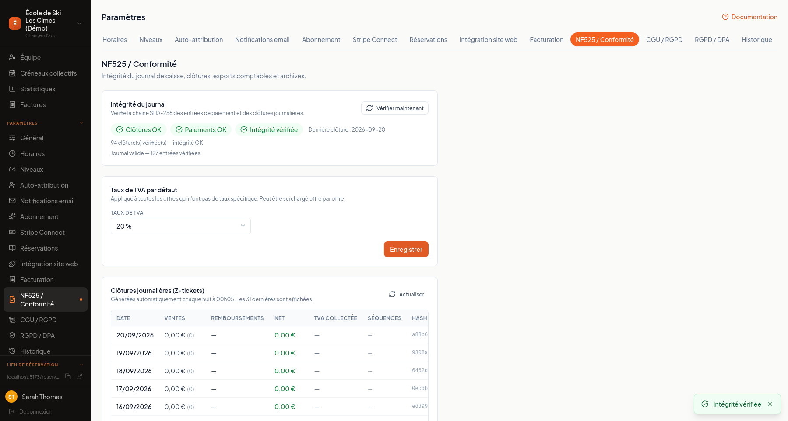
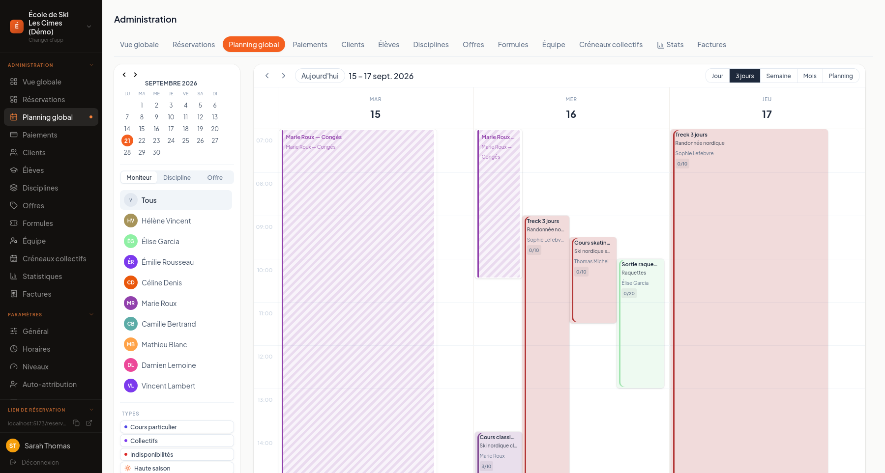
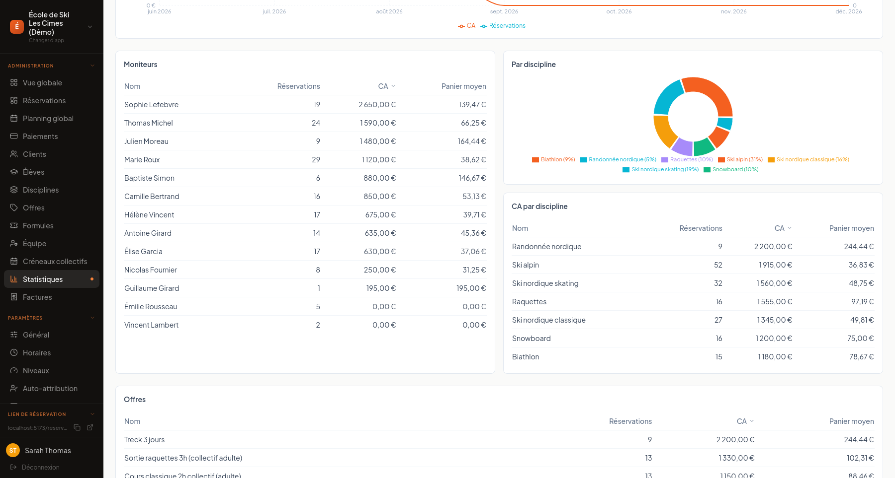

Krenolis
Une plateforme de réservation, planning d'équipes, encaissement et facturation pour les activités saisonnières qui emploient des intervenants indépendants : écoles de ski, écoles de musique, studios de yoga, centres équestres, ... Elle résout des problèmes que les outils génériques ignorent — un moniteur indépendant qui travaille pour deux établissements clients ne peut pas être réservé au même horaire sur les deux, sans qu'aucune des deux structures ne voie le planning de l'autre ; la tarification bascule seule en haute/basse saison ; la conformité fiscale française (NF525, facturation séquentielle) est intégrée par défaut, pas en option. Développé en marge de mon cursus à 42 pour explorer un sujet qui me tient à cœur au-delà du cadre pédagogique de l'école, en m'appuyant largement sur des outils d'IA pour l'implémentation afin de concentrer mon temps sur l'architecture, la logique métier et la conformité légale.
- React
- TypeScript
- Vite
- Firebase (Firestore, Functions, Hosting)
- Stripe Connect


